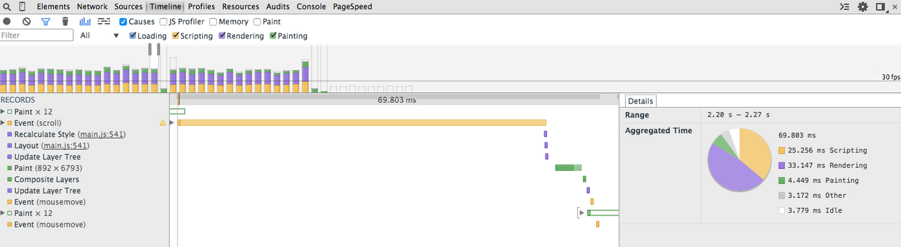
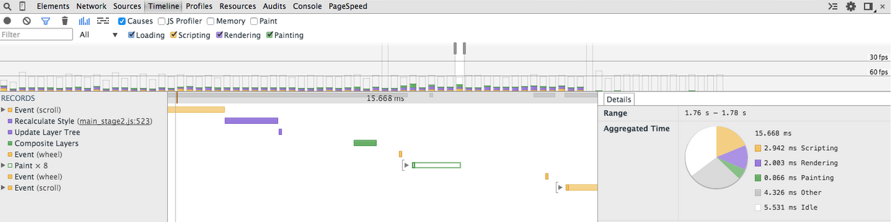

As web applications become increasingly interactive and accessed on a variety of devices there are a variety of opportunities in which performance issues can hinder the user experience. As the number of devices users can access an application from continues to grow, ensuring a quality user experience across those devices is important.
I improved a provided website with a number of optimization- and performance-related issues so that it achieves a over 95 PageSpeed score and runs at 60 frames per second. This project also helped me understand lower-level concepts regarding how the browser works and interprets code to produce highly performance applications.
PageSpeed Insights score
Improved 60 frames per second frame rate
Before
After
